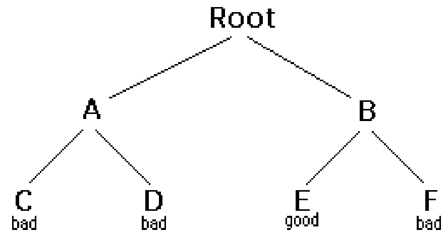

|
|
 |
|
Backtracking is a form of recursion.
The usual scenario is that you are faced with a number of options, and you must choose one of these. After you make your
choice you will get a new set of options; just what set of options you get depends on what choice you made. This procedure is
repeated over
and over until you reach a final state. If you made a good sequence of choices, your final state is a goal state;
if you didn't, it isn't.
Conceptually, you start at the root of a tree; the tree probably has some good leaves and some bad leaves, though it may be that the
leaves are all good or all bad. You want to get to a good leaf. At each node, beginning with the root, you choose one of its children
to move to, and you keep this up until you get to a leaf.
Suppose you get to a bad leaf. You can backtrack to continue the search for a good leaf by revoking your most recent choice,and
trying out the next option in that set of options. If you run out of options, revoke the choice that got you here, and try another
choice at that node. If you end up at the root with no options left, there are no good leaves to be found.
This needs an example.

In this example we drew a picture of a tree. The tree is an abstract model of the possible sequences of choices we could make.
There is also a data structure called a tree, but usually we don't have a data structure to tell us what choices we have.
(If we do have an actual tree data structure, backtracking on it is called depth-first tree searching.)
The backtracking algorithm.
boolean solve(Node n) {
if n is a leaf node {
if the leaf is a goal node, return true
else return false
} else {
for each child c of n {
if solve(c) succeeds, return true
}
return false
}
}
Notice that the algorithm is expressed as a boolean function. This is essential to understanding the algorithm. If solve(n) is true, that means node n is part of a solution--that is, node n is one of the nodes on a path from the root to some goal node. We say that n is solvable. If solve(n) is false, then there is no path that includes n to any goal node.
How does this work?
Hence, to decide whether any non-leaf node n is solvable (part of a path to a goal node),
all you have to do is test whether any child of n is solvable. This is done recursively, on each child of n.
In the above code, this is done by the lines
for each child c of n {
if solve(c) succeeds, return true
}
return false
Eventually the recursion will "bottom" out at a leaf node. If the leaf node is a goal node, it is solvable;if the leaf node
is not a goal node, it is not solvable. This is our base case. In the above code, this is done by the lines
if n is a leaf node {
if the leaf is a goal node, return true
else return false
}
The backtracking algorithm is simple but important. You should understand it thoroughly.Another way of stating it is as follows:
Backtracking is a rather typical recursive algorithm, and any recursive algorithm can be rewritten as a
stack algorithm. In fact, that is how your recursive algorithms are translated into machine or assembly language.
boolean solve(Node n) {
put node n on the stack;
while the stack is not empty {
if the node at the top of the stack is a leaf {
if it is a goal node, return true
eals pop it off the stack
}
else{
if the node at the top of the stack has untried children
push the next untried child onto the stack
else pop the node off the stack
}
return false
}
Starting from the root, the only nodes that can be pushed onto the stack are the children of
the node currently on the top of the stack, and these are only pushed on one child at a time; hence, the nodes on the stack
at all times describe a valid path in the tree. Nodes are removed from the stack only when it is known that they have no goal
nodes among their descendents.Therefore, if the root node gets removed (making the stack empty), there must have been no goal
nodes at all, and no solution to the problem. When the stack algorithm terminates successfully, the nodes on the stack form
(in reverse order) a path from the root to a goal node. Similarly, when the recursive algorithm finds a goal node,the path
information is embodied (in reverse order) in the sequence of recursive calls. Thus as the recursion unwinds,the path can be
recovered one node at a time, by (for instance) printing the node at the current level, or storing it in an array. Here is the
recursive backtracking algorithm, modified slightly to print (in reverse order) the nodes along the successful path:
boolean solve(Node n){
if n is a leaf node{
if the leaf is a goal noad{
print n
return true
}
else return false
}else{
for each child c of n{
if solve(c)succeeds{
print n
return true
}
}
return false
}
}
All of these versions of the backtracking algorithm are pretty simple, but when applied to a real problem,
they can get pretty
cluttered up with details. Even determining whether the node is a leaf can be complex:
for example,
if the path represents a series of moves in a chess endgame problem, the leaves are the checkmate and stalemate
solutions
To keep the program clean, therefore, tests like this should be buried in methods. In a chess game, for example, you could test
whether a node is a leaf by writing a gameOver method (or you could even call itisLeaf).
This method would encapsulate all the
ugly details of figuring out whether any possible moves remain.
Notice that the backtracking altorithms require us to keep track,for each node on the current path, which of its children have
been tried already (so we don't have to try them again).
In the above code we made this look simple, by just saying for each child c of n.
In reality, it may be difficult to figure out what the possible children are, and there may be no obvious way to step through
them. In chess, for example, a node can represent one arrangement of pieces on a chessboard, and each child of that node can
represent the arrangement after some piece has made a legal move. How do you find these children, and how do you keep track
of which ones you've already examined?
The most straightforward way to keep track of which children of the node have been tried is as follows: Upon initial entry
to the
node (that is, when you first get there from above), make a list of all its children. As you try each child, take it
off the list. When
the list is empty, there are no remaining untried children, and you can return "failure." This is a
simple approach, but it may require
quite a lot of additional work.
There is an easier way to keep track of which children have been tried, if you can define an ordering on the children. If there is an
ordering, and you know which child you
just tried, you can determine which child to try next.
For example, you might be able to number thechildren 1 through n, and try them in
numerical order. Then, if you have just tried
child k, you know that you have already tried children
1 through k-1, and you have not yet tried childrenk+1
through n. Or, if you
are trying to color a map with just four colors, you can always try red first, then yellow, then green, then blue.
If child yellow fails,
you know to try child green next. If you are searching a maze, you can try choices in the order left, straight, right
(or perhaps
north, east,south, west).
It isn't always easy to find a simple way to order the children of a node. In the chess game example,
you might number your
pieces (or perhaps the squares of the board) and try them in numerical order; but in addition
each piece may also have several
moves, and these must also be ordered.
For starters, let's do the simplest possible example of backtracking, which is searching an actual tree.
We will also use the
simplest kind of tree, a binary tree.
A binary tree is a data structure composed of nodes.One node is designated as the root node. Each node can reference (point
to) zero, one, or two other nodes, which are called its children. The children are referred to as the left child and/or the right child.
All nodes are reachable (by one or more steps) from the root node, and there are no cycles. For our purposes, although this is not
part of the definition of a binary tree, we will say that a node might or might not be a goal node, and will contain its name. The
first example in this paper (which we repeat here) shows a binary tree.
Here's a definition of the BinaryTree class:
public class BinaryTree {
BinaryTree leftChild = null;
BinaryTree rightChild = null;
boolean isGoalNode = false;
String name;
BinaryTree{string name, BinaryTree left, BinaryTree right, boolean isGoalNode) {
this.name = name;
leftChild = left;
rightChild = right;
this.isGoalNode = isGoalNode;
}
}
Next we will create a TreeSearch class, and in it we will define a method makeTree() which constructs the above binary tree.
static BinaryTree makeTree() {
BinaryTree root, a, b, c, d, e, f;
c = new BinaryTree("C", null, null, false);
d = new BinaryTree("D", null, null, false);
e = new BinaryTree("E", null, null, true);
f = new BinaryTree("F", null, null, false);
a = new BinaryTree("A", c, d, false);
b = new BinaryTree("B", e, f, false);
root = new BinaryTree("Root", a, b, false);
return root;
}
Here's a main program to create a binary tree and try to solve it:
public static void main(String args[]) {
BinaryTree tree = makeTree();
System.out.println(solvable(tree));
}
And finally, here's the recursive backtracking routine to "solve" the binary tree by finding a goal node.
static boolean solvable(BinaryTree node) {
/* 1 */ if (node == null) return false;
/* 2 */ if (node.isGoalNode) return true;
/* 3 */ if (solvable(node.leftChild)) return true;
/* 4 */ if (solvable(node.rightChild)) return true;
/* 5 */ return false;
}
Here's what the numbered lines are doing:
This program runs correctly and produces the unenlightening result true.
Each time we ask for another node, we have to check if it is null. In the above we put
that check as the first thing in solvable.
An alternative would be to check first whether each child exists,
and recur only if they do. Here's that alternative version:
static boolean solvable(BinaryTree node) {
if (node.isGoalNode) return true;
if (node.leftChild != null && solvable(node.leftChild)) return true;
if (node.rightChild != null && solvable(node.rightChild)) return true;
return false;
}
I think the first version is simpler, but the second version is slightly more efficient.
One of the things that simplifies the above binary tree search is that, at each choice point, you can ignore all the previous
choices.Previous choices don't give you any information about what you should do next; as far as you know, both the left and the
right child are possible solutions. In many problems, however, you may be able to eliminate children immediately, without
recursion.
Consider, for example, the problem of four-coloring a map. It is a theorem of mathematics that any map on a plane, no matter
how convoluted the countries are, can be colored with at most four colors, so that no two countries that share a border are the
same color.
To color a map, you choose a color for the first country, then a color for the second country, and so on, until all countries are
colored.
There are two ways to do this:
Let's apply each of these two methods to the problem of coloring a checkerboard. This should be
easily solvable; after all,a
checkerboard only needs two colors.
boolean mapIsOK()
Used by method 1 to check (at a leaf node) whether the entire map is colored correctly.
boolean okToColor(int row, int column, int color)
Used by method 2 to check, at every node, whether there is an adjacent node already colored with the given color.
int[] nextRowAndColumn(int row, int column)
Used by both methods to find the next "country" (actually, the row and column of the next square on the checkerboard).
Here's the code for method 1:
boolean explore1(int row, int column, int color) {
if (row >= NUM_ROWS)return mapIsOK();
map[row][column] = color;
for (int nextColor = RED; nextColor <= BLUE; nextColor++) {
int[] next = nextRowAndColumn(row, column);
if (explore1(next[0], next[1], nextColor)) return true;
}
return false;
}
And here's the code for method 2:
boolean explore2(int row, int column, int color) {
if (row >= NUM_ROWS)return true;<
if (okToColor(row, column, color)) {
map[row][column] = color;
for (int nextColor = RED; nextColor <= BLUE; nextColor++) {
int[] next = nextRowAndColumn(row, column);
if (explore2(next[0], next[1], nextColor)) return true;
}
}
return false;
}
Those appear pretty similar, and you might think they are equally good. However, the timing information suggests otherwise:
| 2 by 3 map | 3 by 3 map | 3 by 4 map | |
| Method 1: | 60 ms. | 940 ms. | 60530 ms. (1 minute) |
| Method 2: | 0ms. | 0 ms. | 0 ms |
The zeros in the above table indicate times too short to measure (less than 1 millisecond).Why this huge
difference? Either of
these methods could have exponential growth. Eliminating a node automatically eliminates all of its descendents,
and this will
often prevent exponential growth. Conversely, by waiting to check until a leaf node is reached, exponential growth
is practically
guaranteed. If there is any way to eliminate children (reduce the set of choices), do so!
Often our first try at a program doesn't work, and we need to debug it. Debuggers are helpful, but sometimes we need to fall
back on inserting print statements. There are some simple tricks to making effective use of print statements.These tricks can be
applied to any program, but are especially useful when you are trying to debug recursive routines.
Often, the best debugging technique is to print every method call and return (or at least the most important ones).You probably
want to print, for each method, what parameters it came in with, and what value it leaves with. However, if you just print a long
list of these, it's hard to match up method exits with their corresponding entries. Indenting to show the level of nesting can help.
Don't clutter up your actual code more than you must. Also, remember that code inserted for debugging purposes can itself
contain bugs, or (in the worst case) can affect the results, so be very careful with it.
Here's our debugging code. For this trivial program, there's almost more debugging code than actual code, but in larger programs
the proportions will be better.
static String indent = "";
static String name(BinaryTree node) {
if (node == null) return null;
else return node.name;
}
static void enter(BinaryTree node) {
System.out.println(indent + "Entering solvable(" + name(node) + ")");
indent = indent + "| ";
}
static boolean yes(BinaryTree node) {
indent = indent.substring(3);
System.out.println(indent + "solvable(" + name(node) + ") returns true");
return true;
}
static boolean no(BinaryTree node) {
indent = indent.substring(3);
System.out.println(indent + "solvable(" + name(node) + ") returns false");
return false;
}
To use this code, we modify solvable as follows:
static boolean solvable(BinaryTree node) {
enter(node);
if (node == null) return no(node);
if (node.isGoalNode) return yes(node);
if (solvable(node.leftChild)) return yes(node);
if (solvable(node.rightChild)) return yes(node);
return no(node);
}
And we get these results:
Entering solvable(Root) | Entering solvable(A) | | Entering solvable(C) | | | Entering solvable(null) | | | solvable(null) returns false | | | Entering solvable(null) | | | solvable(null) returns false | | solvable(C) returns false | | Entering solvable(D) | | | Entering solvable(null) | | | solvable(null) returns false | | | Entering solvable(null) | | | solvable(null) returns false | | solvable(D) returns false | solvable(A) returns false | Entering solvable(B) | | Entering solvable(E) | | solvable(E) returns true | solvable(B) returns true solvable(Root) returns true true
Trick #3: Never discard your debugging statements.
Writing debugging statements is programming, too. Often it's as much work to debug the debugging statements as it is
to debug
the actual program. Once your program is working, why throw this code away?
Obviously, you don't want to print out all this debugging information from a program you are ready to submit (or to turn over to
your manager). You could comment out your debugging calls, but that can be a lot of work. What's more, in the above example,
you would have to replace every return(yes(node)) with return(true), and every return(no(node)) with return false. With all these
changes, you might introduce new bugs into your program.
The simple solution is to make your debugging statements conditional. For example,
static final boolean debugging = false;
static void enter(BinaryTree node) {
if (debugging) {
System.out.println(indent + "Entering solvable(" + name(node) + ")");
indent = indent + "| ";
}
}
static boolean yes(BinaryTree node) {
if (debugging) {
indent = indent.substring(3);
System.out.println(indent + "solvable(" + name(node) + ") returns true");
}
return true;
}
static boolean no(BinaryTree node) {
if (debugging) {
indent = indent.substring(3);
System.out.println(indent + "solvable(" + name(node) + ") returns false");
}
return false;
}
In industry, actual programs often have multiple flags to control different aspects of debugging. Don't worry too much about
making your code larger; modern compilers will notice that since the variable debugging is final,
it can never be true, and the
controlled code will be discarded.
Trick #4: Create an Exception.
If an Exception is thrown, you can get information about just where it happened by sending it the message
printStackTrace(PrintStream).Since an Exception is an object like any other, you can create and throw your own Exceptions.
However, Java programmers don't always realize that you can create an Exception without throwing it. For example, the following
code
new Exception("Checkpoint Charlie").printStackTrace(System.out);
will print out a message something like this, and the program will then continue normally. That is, the above code just acts like a
print statement.
java.lang.Exception: Checkpoint Charlie at TreeSearch.solvable(TreeSearch.java:53) at TreeSearch.solvable(TreeSearch.java:57) at TreeSearch.main(TreeSearch.java:72) at __SHELL38.run(__SHELL38.java:16) at bluej.runtime.ExecServer.suspendExecution(Unknown Source)
I call the following puzzle "Cindy's puzzle" for historical reasons. You have some number n of black marbles and
the same number
of white marbles, and you have a playing board which consists simply of a line of 2n+1 spaces to put
the marbles in. Start with
the black marbles all at one end (say, the left), the white marbles all at the other end,
and a free space in between.
|
|
|
|
The goal is to reverse the positions of the marbles:
|
|
|
|
The black marbles can only move to the right, and the white marbles can only move to the left (no backing up).
At each move,
a marble can either:
For example, you could make the following sequence of moves:
| Starting position: |
|
| Black move ahead: |
|
| White jumps: |
|
| Black moves ahead: |
|
| Black jumps: |
|
| White moves ahead: |
|
| Stuck! |
The backtracking method is named solvable and returns a boolean. In solvable we shall need to check whether we are at a leaf,
which in this case means a position from which no further moves are possible. This isn't so easy.
Now to the program.The main program will initialize the board, and call a recursive backtracking routine to attempt to solve the
puzzle.
The backtracking routine will either succeed and print out a winning path, or it will fail, and the main program will have to
print out
the bad news.
The backtracking method is named solvable and returns a boolean. In solvable we shall need to check whether we are at a leaf,
which in this case means a position from which no further moves are possible. This isn't so easy.
Each possible move will result in a new board position, and these new board positions are the children of the current board
position.
Hence to find the children of a node (that is, of a board position), we need only find the possible moves from that node.
Remember that it is also highly desirable to find an ordering on these possible moves.
Here it is time to stop and take thought. To make progress, we must analyze the game to some extent. Probably a number of
approaches would work, and what follows is based on the way I worked it out. If you were to program this puzzle, you might find
a
different but equally valid approach.
First, notice that if a marble has a move, that move is unique: if it can move ahead one square, then it cannot jump.
If it can jump,
it cannot move ahead one square. This suggests that, to find the possible moves, we might assign numbers to the marbles,
and
check each marble in turn. When we have looked at all the marbles, we have looked at all the possible moves.
This would require
having a table to keep track of where each marble is, or else somehow "marking" each marble with its number
and searching the
board each time to find the marble we want. Neither alternative is very attractive.
Next, notice that for a given board position, each marble occupies a unique space. Hence, instead of talking about moving
a
particular marble, we can talk about moving the marble in a particular space. If a move is possible from a given space,
then that
must be the only move possible from that space, because if the marble in that space has a move, it is unique.
There is a slight
complication because not every space contains a marble, but at least the spaces (unlike the marbles) stay in one place.
Now we have a simpler ordering of moves to use in our program. Just check, in order, the 2n+1 spaces of the board.
For each
space, either zero or one moves is possible. With this understanding, we can write a boolean method
canMove(int[] board, int
position) which determines whether a move is possible from the given position:
We write another method int[] makeMove(int[] oldBoard, int position)> that will take a board and a position,
make a move from
that position, and return as its value a new board. (We could write this somewhat more efficiently
by changing the old board,
rather than creating a new one, but here we are more concerned with simplicity.) In technical jargon,
makeMove is "applicative"
rather than "mutative."
Along with canMove and makeMove,> we are using methodspuzzleSolved and printBoard
with meanings that
should be obvious. With these methods, our central backtracking method can be written as follows:
boolean solvable(int[] board) {
if (puzzleSolved(board)) {
return true;
}
for (int position = 0; position < BOARD_SIZE; position++) {
if (canMove(board, position)) {
int[] newBoard = makeMove(board, position);
if (solvable(newBoard)) {
printBoard(newBoard);
return true;
}
}
}
return false;
}
Along with canMove and makeMove, we are using methods puzzleSolved and printBoard with meanings that should be obvious.
Here is some output from the program:
16.WHITE WHITE WHITE _____ BLACK BLACK BLACK 15.WHITE WHITE WHITE BLACK _____ BLACK BLACK 14.WHITE WHITE _____ BLACK WHITE BLACK BLACK 13.WHITE _____ WHITE BLACK WHITE BLACK BLACK 12.WHITE BLACK WHITE _____ WHITE BLACK BLACK 11.WHITE BLACK WHITE BLACK WHITE _____ BLACK 10.WHITE BLACK WHITE BLACK WHITE BLACK _____ 9. WHITE BLACK WHITE BLACK _____ BLACK WHITE 8. WHITE BLACK _____ BLACK WHITE BLACK WHITE 7. _____ BLACK WHITE BLACK WHITE BLACK WHITE 6. BLACK _____ WHITE BLACK WHITE BLACK WHITE 5. BLACK BLACK WHITE _____ WHITE BLACK WHITE 4. BLACK BLACK WHITE BLACK WHITE _____ WHITE 3. BLACK BLACK WHITE BLACK _____ WHITE WHITE 2. BLACK BLACK _____ BLACK WHITE WHITE WHITE 1. BLACK BLACK BLACK _____ WHITE WHITE WHITE
Notice that the solution is given in reverse order: BLACK starts out on the left and WHITE on the right, as in the last line. I've added line numbers to the actual output in order to emphasize this point. Backtracking always produces its results (sequence of choices) in reverse order; it is up to you, the programmer, to reverse the results again to get them in the correct order.